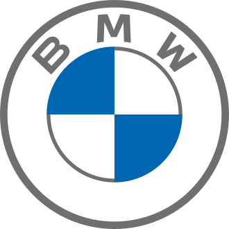
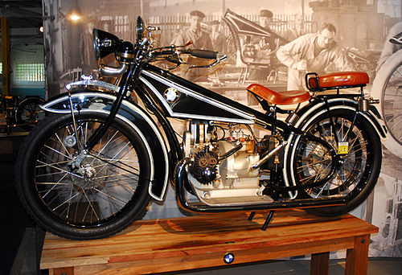

BMW logó
A cég először repülőgép-motorokat gyártott, a kék rész az eget, a fehér pedig a propellert ábrázolja. Emellett a független Bajorország kék-fehér zászlaja előtt tisztelegnek.

Története
A kezdetek
|
A BMW elődje az 1913-ban Karl Rapp által megalapított Rapp Motorenwerke GmbH volt. Először 1917 júliusában változtatták nevüket BMW GmbH-ra (kft.), majd egy évvel később a részvénytársasági formára váltva, BMW AG-ra. Az első üzletvezető 1942-ig Franz Josef Popp volt. A fiatal cégben Max Friz, a törekvő mérnök hamar nevet szerzett magának: 1917-ben repülőgépek számára fejlesztett olyan motort, melynek révén a magasban tapasztalt teljesítményveszteség csökkent. Ez a konstrukció annyira jól vizsgázott, hogy a porosz katonai igazgatás 2000 db-ot rendelt belőle. 1919. június 17-én egy BMW Illával elérték a 9760 méteres magassági világrekordot, de az első világháború végével és a versailles-i békeszerződés aláírásával mintha a cég vége is elérkezett volna: utóbbi ugyanis öt évre megtiltotta, hogy a BMW egyetlen akkori termékét, a repülőgépmotorokat Németország területén gyártsák. 1922-ben a főrészvényes, Camillo Castiglioni elhagyta a céget, és magával vitte a BMW név jogait. A Bajor Repülőgépgyárhoz ment (Bayerische Flugzeugwerke, BFW). Ez a Nikolaus August Otto, az Otto-motor feltalálója fiának, Gustav Ottónak 1916. március 7-én bejegyzett Gustav Otto Repülőgépgyárából jött létre. E dátumot szokás a hivatalos céges történetírásban az alapítás időpontjaként megadni. Castiglioni váltásával lett a BFW-ből BMW. Az eddig BMW-nek hívott vállalatból lett a Südbremse, amit ma Knorr Bremse-ként ismerünk. Egy évvel a névváltoztatás után, 1923-ban Max Friz és Martin Stolle kifejlesztette az első motorkerékpárt, az R32-t, ezzel elkezdve egy új termelési ágazatot, a motorkerékpárok gyártását. Friznek a modell kifejlesztéséhez mindössze öt hétre volt szüksége. A mai napig megőrizték alapelvét: a boxermotort és ennek a váltóval közös egységbe szervezését. |
 |